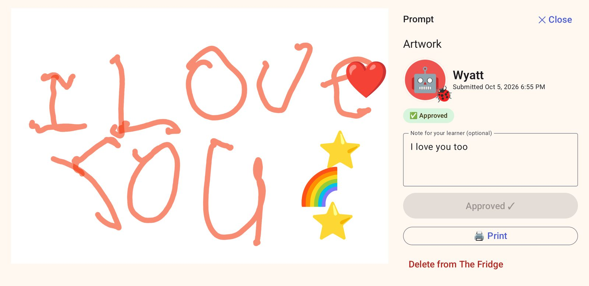
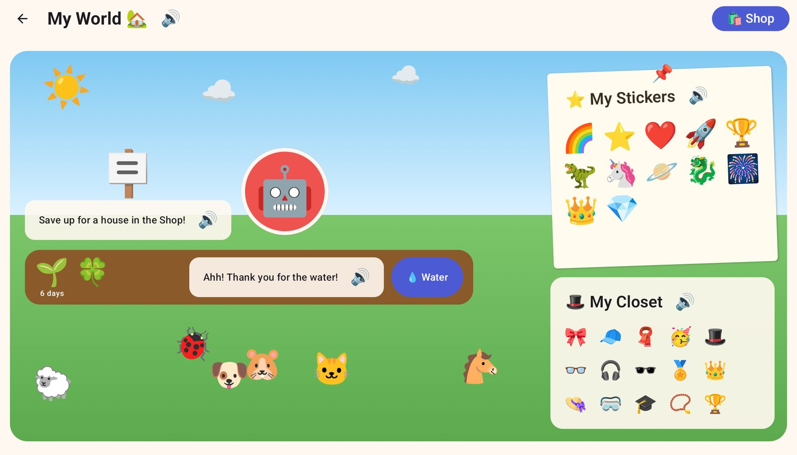
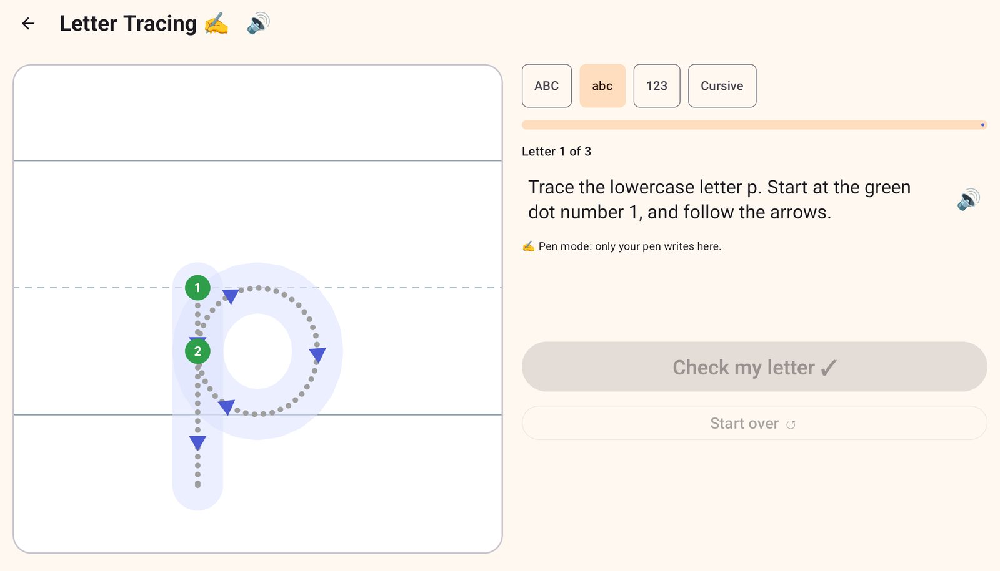

Android tablet app · Kindergarten to 5th grade
The Fridge
A learning app built around a pen. Kids do short daily lessons in math, reading and writing, then explore science, history, coding and music. Their best work goes up on the fridge for a grown-up to see.
- Works fully offline
- No accounts, no ads
- Everything can be read aloud
- California K–5 standards



Short lessons, a real pen, and a world to grow
Every question, button and story has a speaker icon, so a child who can't read yet can still find their way. Wrong answers get "try again" or "keep going." There's no red X and no buzzer.
It starts with a warm-up game
A new learner makes an avatar, then plays a short placement game across math, reading and writing. It finds where they are, so the first lessons are neither too easy nor too hard.
"I don't know" is always one of the answers. Picking it is fine, and it helps the app choose better than a guess would.
Today's Picks first, then free choice
Each day the home screen offers five picks (four in kindergarten), chosen from new skills and things due for review. Picks earn double coins. Once they're done, everything else opens up.
The avatar gets hungry and sleepy, a little like a Tamagotchi. Kids can buy it a snack, take a stretch break, or do slow breathing in the Calm Corner. These reminders only appear on the home screen, never in the middle of a lesson.
Real handwriting with a real pen
Writing happens on lined paper with a stylus. Prompts cover free writing, opinions, facts and stories. If a child is stuck, they can tap "Say your idea" and talk it through out loud first. Speech recognition runs on the tablet itself.
- Tracing covers capitals, lowercase, numbers and cursive, with numbered start dots and arrows.
- Palm rejection means a hand resting on the screen doesn't leave marks.
- Typing lessons use a real keyboard and show which key comes next.
Science, history and coding
Beyond the core subjects, there's science (diagrams and "Sort it!" activities), history timelines, and coding puzzles where kids give a robot step-by-step directions or find the bug in someone else's.
There's music too, with a xylophone, drums and a game where kids play back a tune they just heard.
Stories to read together
Read-Along has stories, true facts, poems and pairs of texts to compare, sorted by grade. The tablet reads along one part at a time and highlights the part it's on, or kids can just listen. A few questions about the story come at the end.
In Read to Me, the child reads out loud and the tablet listens. In Listen & Learn, two hosts, June and Felix, talk through a history or science topic in about three minutes.
Room for feelings, too
In the Calm Corner, a glowing light moves slowly around a circle or a figure eight. Kids follow it with the pen, breathing in as it goes one way and out as it comes back. There's no score and no timer.
Feelings gives short everyday scenes and asks how someone might feel, so kids get practice naming emotions in others and in themselves.
Coins buy things that grow
Finished lessons earn coins. Kids spend them on seeds, pets, a house, stickers and outfits for their avatar. Seeds take real days to grow, and only if someone remembers to water them.
A wrong answer never costs coins. Grown-ups can see every coin earned and spent.
Everything on the home screen
Each tile is its own activity, and most of them adjust to the child's level.
Math
- Math Practice
- Math Quiz, with a scratchpad
- Clock
- Cash Register
Reading & Writing
- Read-Along stories
- Read to Me (reading aloud)
- Word Lab
- Listen & Do
- Spelling Bee
- Sentence Fixer
- Writing
- Tracing
- Typing
Explore
- Science Lab
- History
- Listen & Learn podcasts
- Coding
- Music
Create, Feel & My Stuff
- Sketchbook
- Feelings
- Calm Corner
- Shop
- My World
- My Fridge
A parent dashboard that shows what's actually happening
The parent area is behind a PIN. Anything that changes grades, grants coins or deletes work happens there.
You set the pace
Math, reading and writing each move through stages: a grade plus a trimester. The dashboard shows how many of a stage's new skills your child has mastered. When you think they're ready, you move them on. The app never promotes them on its own.
Each subject moves separately. A child can be in 2nd-grade reading and 1st-grade math.
Every standard, in one list
Pick a grade and see each California standard for it: Common Core math and English, NGSS science, and history–social science. Each one shows which activities practice it and how your child is doing.
For example, 1.OA.1 is word problems within 20. The list also says which standards the app doesn't cover yet.
A report that counts real time
Active time only counts touching, writing or typing. If the tablet sits idle on a lesson, that time is left out. The report breaks time down by subject and lists every activity and every skill practiced, with an average score for each.
When you want a clearer check, start a trimester checkpoint: three questions for each new standard, no hints. Your child can review their answers before turning it in. Each standard comes back as Met, Approaching or Not yet, and the report tracks the trend.
The fridge, without the magnets
Drawings, stories and handwritten math work arrive in your inbox. Approve a piece and it goes up on your child's fridge with coins and a note from you. You can also print it for the real fridge.
Opinion, informative and story writing is scored by you, using that grade's rubric.
It stays on the tablet
The Fridge has no servers and no accounts. Your child's work, voice and progress never leave the device unless you export them yourself.
- No internet accessThe app doesn't request Android's internet permission, so it has no way to send anything anywhere.
- Encrypted on the deviceThe database is encrypted, with its key held by the tablet's Android Keystore. Device backups are turned off.
- Voices stay localRead-aloud uses offline voices, and speech recognition runs on the tablet. When a child reads aloud, only the score is kept, never the recording.
- No ads, no trackingNo sign-up, analytics or in-app purchases. Coins are only earned by learning.
- A PIN for grown-upsThe PIN is stored as a salted hash and locks out after repeated wrong tries.
- Take a learner with youExport one child to a passphrase-encrypted file and import them on another tablet.